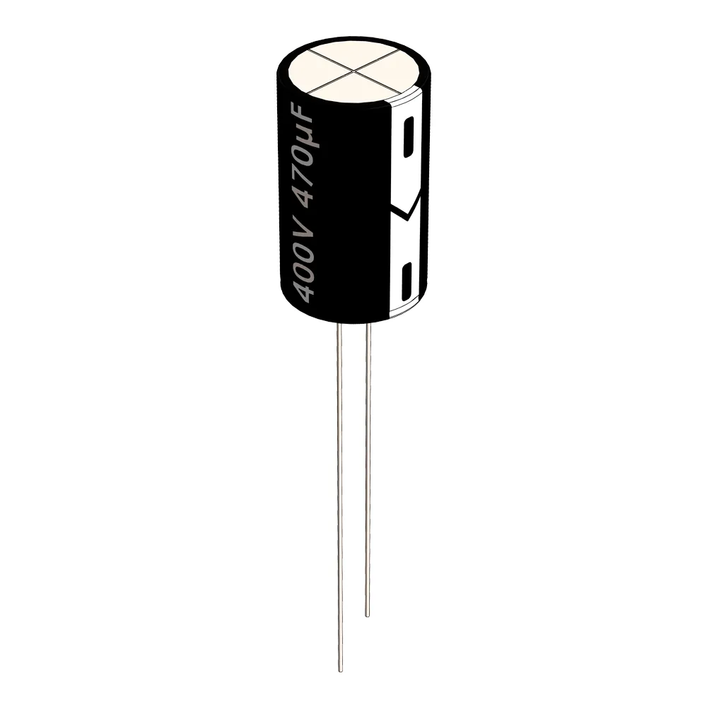
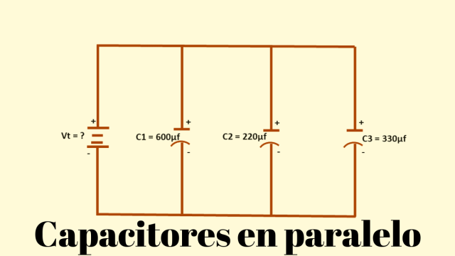
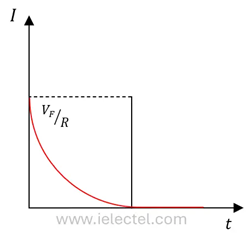
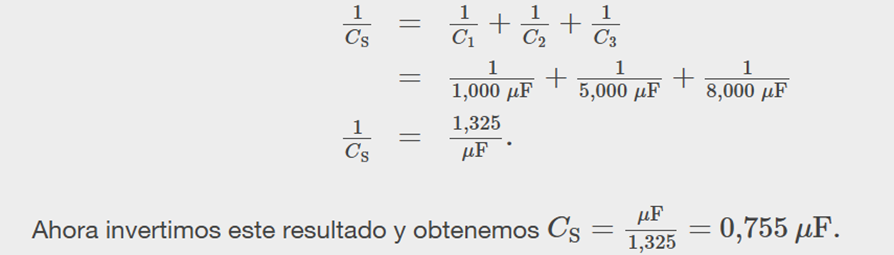

Circuitos Eléctricos
Peregrina Chavarría José Elías - Briseño Rodríguez Ivana Naomi
Capacitor
¿Qué es?
Los capacitores son dispositivos que almacenan energía, disponibles en muchos tamaños y formas. Consisten en dos placas de material conductor (generalmente un metal fino) ubicado entre un aislador de cerámica, película, vidrio u otros materiales, incluso aire. El aislante también se conoce como un dieléctrico y aumenta la capacidad de carga de un capacitor. A veces, los capacitores se llaman condensadores en la industria automotriz, marina y aeronáutica.

Las placas internas están conectadas a dos terminales externos, que a veces son largos y finos, y se asemejan a diminutas antenas o patas metálicas. Estos terminales se pueden conectar a un circuito.
Los capacitores y las baterías almacenan energía. Mientras que las baterías liberan energía poco a poco, los capacitores la descargan rápidamente.
Un capacitor acumula energía (voltaje) a medida que fluye la corriente a través de un circuito eléctrico. Ambas placas mantienen cargas iguales, y a medida que la placa positiva recoge una carga, una carga igual fluye fuera de la placa negativa.
Cuando el circuito está apagado, un capacitor retiene la energía que ha reunido, aunque generalmente ocurre una leve fuga.
Tipos
En la actualidad hay varios tipos de capacitores, los cuales se diferencian por sus usos y características físicas y eléctricas. Veamos:
Capacitor electrolítico
tienen la capacidad de liberar grandes cantidades de energía en muy poco tiempo, cualidad que hace que sea utilizado como **capacitor de arranque de motores eléctricos** que requieren de una gran potencia inicial. Es importante tener en cuenta que no funcionan bien con una corriente alterna porque puede producir un cortocircuito.
Capacitor de poliéster
tienen una gran potencia y responden rápidamente. Sus usos más comunes se dan en aplicaciones de conexión y desconexión de corriente continua, para **filtrar señales de baja tolerancia** y sistemas de audio. [Image of a polyester film capacitor]

Capacitor cerámico
según sus características, pueden funcionar a distintas frecuencias, incluso las microondas. Gracias a las propiedades de la cerámica, **prácticamente no tienen pérdidas**.

Capacitores en serie
son dos o más condensadores conectados en una línea. El positivo de cada capacitor está conectado a la placa negativa del siguiente condensador y tienen la **misma carga** e igual corriente de carga.

Capacitores en paralelo
también son dos o más capacitores, pero conectados paralelamente. Tienen la **misma tensión**, así como un suministro de tensión común.

¿Para qué sirve?
El capacitor es un instrumento que tiene la capacidad de almacenar una carga de energía para que sea liberada de manera rápida.
Muchos tienden a confundir a este elemento con una batería, pero la realidad es que son muy diferentes: la batería puede almacenar y generar energía, mientras que el condensador solo almacena energía en forma de campo eléctrico en reposo estático.
La carga y descarga de un capacitor es muy útil para, por ejemplo, alimentar un motor eléctrico o en mecanismos que requieren un rápido incremento de energía.
En los circuitos donde el voltaje de una corriente eléctrica fluctúa mucho, un capacitor sirve para nivelar el sistema, ya que almacena la energía sobrante cuando el voltaje aumenta y la libera cuando el sistema vuelve al equilibrio.
Otra función destacada es generar retrasos en circuitos eléctricos cuando se requiere.
Además, se utiliza en el desarrollo de dispositivos electrónicos porque tiene la capacidad de nivelar los voltajes de una corriente eléctrica.
Fórmulas
Combinación en serie
Podemos calcular la capacitancia total (equivalente) considerando los voltajes a través de los condensadores individuales. Los potenciales a través de los condensadores 1, 2 y 3 son, respectivamente:
Estos potenciales deben sumar el voltaje total de la fuente:
El potencial V se mide a través de un condensador equivalente que mantiene la misma carga Q y tiene una capacitancia equivalente CS. Sustituyendo V₁, V₂ y V₃:
Cancelando Q, obtenemos la capacitancia equivalente de tres condensadores conectados en serie:
Esta expresión puede generalizarse para cualquier número de condensadores en serie.
Combinación en paralelo
En paralelo, todos los condensadores tienen el mismo voltaje V, pero cada uno puede almacenar diferente carga. La carga total de la red es la suma de las cargas individuales:
Usando la relación Q = CV, para la red y para los condensadores individuales:
Simplificando, obtenemos la capacitancia equivalente de tres condensadores en paralelo:
Esta fórmula también se puede generalizar para cualquier número de condensadores conectados en paralelo.
Proceso de carga
Cuando conectamos un capacitor a una fuente de corriente continua (CC o DC), la corriente comienza a fluir hacia las placas del condensador. Inicialmente, el flujo de corriente es alto, ya que el condensador está vacío y la diferencia de potencial entre sus placas es pequeña. A medida que se carga, la corriente disminuye hasta cesar cuando el condensador está completamente cargado.
Circuito de carga de un capacitor o condensador
Este circuito es un ejemplo clásico de un circuito de carga de un capacitor a través de una resistencia en serie, conocido como circuito RC serie.

Componentes del circuito
Explicación detallada del proceso de carga
El interruptor S está abierto. El condensador está descargado (Vc = 0).
Se cierra el interruptor. La corriente inicial es máxima porque Vc = 0:
Imáx = Vf / R
Aumento del voltaje en el condensador.
La corriente disminuye mientras el condensador se carga. El voltaje en el tiempo t es:
Vc(t) = Vf (1 − e−t / (R × C))
Disminución de la corriente.
I(t) = (Vf / R) · e−t / (R × C)
El condensador se carga completamente.
Finalmente Vc = Vf, y la corriente se reduce a cero después de unas 5 constantes de tiempo (5τ).
Proceso de descarga
Durante la descarga, el condensador libera su energía a través de la resistencia.
Componentes del circuito
Explicación detallada del proceso de descarga
Energía almacenada:
E = 1/2 · C · V02
Voltaje durante la descarga:
Vc(t) = V0 · e−t / (R × C)

Corriente durante la descarga:
I(t) = (V0 / R) · e−t / (R × C)

Ejemplos de Cada Fórmula
1. Ejemplo: Tiempo de Carga (Constante de Tiempo τ)
τ = R × C = (10 × 10³) × (100 × 10⁻⁶) = 1 segundo
El capacitor tarda 1 segundo en llegar al 63% y 5τ ≈ 5 s en cargarse casi por completo.
2. Ejemplo: Capacitores en Serie
Calcule CS para tres capacitores: C1=1000 µF, C2=5000 µF, C3=8000 µF.

1 / CS = 1 / C1 + 1 / C2 + 1 / C3
1 / CS = 1/1000 + 1/5000 + 1/8000
1 / CS ≈ 0.001225
CS ≈ 816.33 µF
3. Ejemplo: Capacitores en Paralelo

CP = C1 + C2 + C3
CP = 1.0 µF + 5.0 µF + 8.0 µF
CP = 14.0 µF